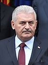

- Main Page
- Contents
- Featured Content
- Current Events
- Random article
- Donate to Wikipedia
- Wikipedia Store
Interaction
Tools
- What links here
- Related changes
- Upload file
- Special pages
- Permanent link
- Page information
- Wikidata item
Print/export
In other projects
- Wikimedia Commons
- Meta-Wiki
- Wikispecies
- Wikibooks
- Wikidata
- Wikinews
- Wikiquote
- Wikisource
- Wikiversity
- Wikivoyage
Languages
From today's featured article

Paul Collingwood (born 26 May 1976) was until 2011 a regular member of the England Test cricket team. He is a batting all-rounder, and a medium-pace bowler. His 206 during the 2006–07 Ashes series was the first double century by an England batsman in Australia for 78 years. Three consecutive match-winning performances at the end of the 2006–07 Commonwealth Bank Series in Australia brought him enthusiastic approval in the British media, helping to secure the trophy for England. In 2010 he led the England team to their first International Cricket Council trophy, the 2010 World Twenty20. He has made the most One Day International (ODI) appearances for England and was, until recently passed by Ian Bell, the leading ODI run scorer. He announced his retirement from Test cricket in January 2011, during the 5th Test of the 2010–11 Ashes series. He finished on a high, becoming a three-time Ashes winner as England won a series in Australia for the first time in 24 years, with three innings victories contributing to a 3–1 win. He is regarded as one of the finest fielders of his time. (Full article...)
Did you know...

Paul Collingwood (born 26 May 1976) was until 2011 a regular member of the England Test cricket team. He is a batting all-rounder, and a medium-pace bowler. His 206 during the 2006–07 Ashes series was the first double century by an England batsman in Australia for 78 years. Three consecutive match-winning performances at the end of the 2006–07 Commonwealth Bank Series in Australia brought him enthusiastic approval in the British media, helping to secure the trophy for England. In 2010 he led the England team to their first International Cricket Council trophy, the 2010 World Twenty20. He has made the most One Day International .
In the news
- Binali Yıldırım (pictured) is appointed Prime Minister of Turkey following the resignation of Ahmet Davutoğlu.
- In the Tajikistani constitutional referendum, voters approve the removal of term limits of incumbent President Emomali Rahmon.
- Independent Green Alexander Van der Bellen is narrowly elected President of Austria.
- Cyclone Roanu kills at least 90 people and leaves more than 130 missing across Bangladesh and Sri Lanka.
- Austrian Federal Railways CEO Christian Kern succeeds Werner Faymann as Chancellor of Austria.
On this day...

- Binali Yıldırım (pictured) is appointed Prime Minister of Turkey following the resignation of Ahmet Davutoğlu.
- In the Tajikistani constitutional referendum, voters approve the removal of term limits of incumbent President Emomali Rahmon.
- Independent Green Alexander Van der Bellen is narrowly elected President of Austria.
- Cyclone Roanu kills at least 90 people and leaves more than 130 missing across Bangladesh and Sri Lanka.
- Austrian Federal Railways CEO Christian Kern succeeds Werner Faymann as Chancellor of Austria.